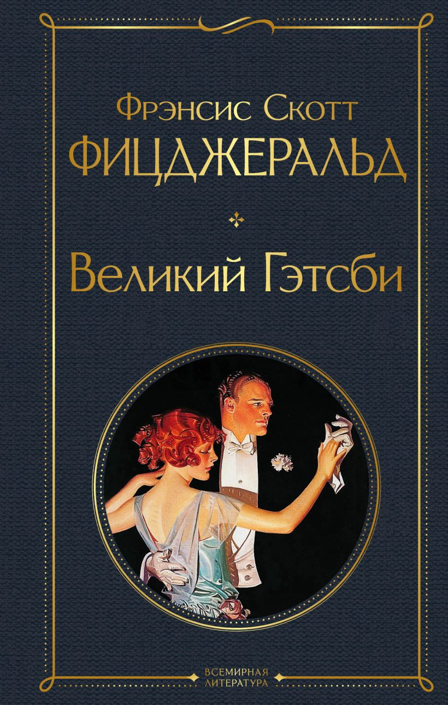
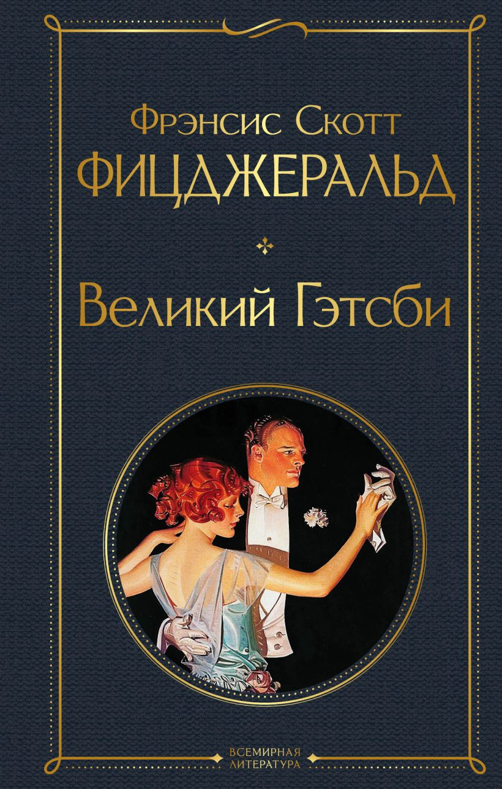

Early Life and Education
Francis Scott Key Fitzgerald was born on September 24, 1896, in St. Paul, Minnesota, to Edward Fitzgerald and Mary McQuillan Fitzgerald. His father was a Southern gentleman with a proud lineage but limited financial success, while his mother came from a wealthy Irish-Catholic family. These two conflicting backgrounds—the genteel traditions of the South and the ambition of immigrant wealth—shaped Fitzgerald's worldview and became central themes in his fiction.
Fitzgerald showed early promise as a writer, publishing stories in his school newspaper and showing a keen interest in literature. He enrolled at Princeton University in 1913, where he became involved in theater, writing scripts and poems. However, he struggled academically and ultimately left in 1917 to join the U.S. Army during World War I.
Military Service and Zelda Sayre
Fitzgerald never saw active combat, but during his training, he met Zelda Sayre, a vibrant and unconventional woman from a prominent Alabama family. He fell in love instantly, and Zelda would become both his muse and the subject of many of his literary characters. Their relationship was passionate, glamorous, and notoriously unstable.
After the war, Fitzgerald moved to New York City to pursue a career in advertising and publishing in hopes of earning enough money to marry Zelda. His early financial struggles led to the rejection of their engagement—until the publication of his first novel changed everything.
Literary Fame and the Jazz Age
In 1920, Fitzgerald published "This Side of Paradise", a novel about youth, love, and self-discovery in post-war America. It was an immediate success and made him a literary celebrity almost overnight. That same year, he married Zelda, and the couple quickly became symbols of the Roaring Twenties—an era of jazz, wild parties, social upheaval, and economic excess.
His next novels, "The Beautiful and Damned" (1922) and "The Great Gatsby" (1925), continued to explore themes of wealth, ambition, and social class. The Great Gatsby, though now considered a classic, received mixed reviews and sold poorly at the time. It would only gain widespread acclaim after his death.
Fitzgerald also wrote extensively for magazines such as The Saturday Evening Post and Esquire, publishing dozens of short stories to support his extravagant lifestyle. These stories often reflected the tensions between wealth and morality, dreams and disillusionment.
Zelda’s Mental Health and Personal Decline
As the 1920s ended and the Great Depression began, the Fitzgeralds’ extravagant lifestyle became unsustainable. Zelda began to suffer from severe mental health issues, eventually being diagnosed with schizophrenia in 1930. She would spend much of the rest of her life in and out of mental institutions.
Fitzgerald’s own life unraveled under the weight of debt, disappointment, and alcoholism. His 1934 novel, "Tender Is the Night", was a deeply personal account of a marriage falling apart, and while it received critical attention, it did not restore his reputation.
Final Years and Hollywood
In the late 1930s, Fitzgerald moved to Hollywood to work as a screenwriter for MGM Studios, where he had limited success. He began a relationship with gossip columnist Sheilah Graham, which provided some emotional stability, but his health continued to decline.
Despite efforts to write a comeback novel, "The Last Tycoon", Fitzgerald died of a heart attack on December 21, 1940, at the age of 44. The novel remained unfinished at his death but was published posthumously in 1941.
Legacy
During his lifetime, Fitzgerald felt he had failed to achieve lasting literary greatness. However, after his death—particularly in the post-World War II era—critics and readers rediscovered his work. The Great Gatsby became a staple of American literature curricula and is now seen as one of the defining novels of the 20th century.
Fitzgerald's writing style is praised for its lyrical beauty, psychological depth, and critical portrayal of the American Dream. His portrayal of the Jazz Age remains unmatched, offering insight into a generation caught between hope and cynicism, dreams and despair.
Major Works
- This Side of Paradise (1920)
- The Beautiful and Damned (1922)
- The Great Gatsby (1925)
- Tender Is the Night (1934)
- The Last Tycoon (unfinished, published 1941)
- Numerous short stories including The Curious Case of Benjamin Button, Babylon Revisited, and Winter Dreams
 
